| Grupo | CamiloHurtado |
| Integrantes | Camilo Andrés Hurtado Carvajal |
| Materia | Pruebas de Calidad de Software |
| Actividad | AA2 – Taller: automatización de pruebas funcionales (rúbrica RAA2_U2) |
| Aplicación bajo prueba | SauceDemo / Swag Labs – https://www.saucedemo.com |
| Herramienta | Selenium WebDriver 4.33 + JUnit 5.10 (Java 21, Maven) |
| Fecha | 11 de noviembre de 2026 |
El objetivo del taller es automatizar un conjunto de pruebas funcionales sobre una aplicación web pequeña, registrar las evidencias técnicas del proceso y reflexionar sobre el trabajo. A diferencia del taller AA1, que usó el proyecto propio SimpleFood, aquí se trabajó sobre una aplicación real de terceros, de la que no se conoce ni se puede modificar el código: un escenario de prueba de caja negra como el que vive un equipo de QA frente a un sistema entregado por otro equipo.
SauceDemo es una tienda en línea de demostración publicada por Sauce Labs para practicar automatización. Tiene inicio de sesión,
catálogo de 6 productos, ordenamiento, carrito y compra en tres pasos (datos del cliente, resumen con impuesto y confirmación).
Publica varios usuarios con la misma clave (secret_sauce). standard_user funciona correctamente,
locked_out_user está bloqueado y otros cuatro tienen defectos sembrados a propósito, lo que permite
comprobar que una suite automatizada realmente detecta fallas.
| Funcionalidad | Qué se verifica | Casos |
|---|---|---|
| Autenticación y sesión | Ingreso válido, cuatro rechazos con su mensaje, acceso directo sin sesión, cierre de sesión. | CP-LOG-01 a 04 |
| Catálogo | Productos y precios contra un oráculo, cuatro ordenamientos, agregar y quitar con contador del carrito. | CP-CAT-01 a 03 |
| Carrito y compra | Contenido del carrito, compra completa con cálculo de subtotal, impuesto (8 %) y total, campos obligatorios. | CP-CAR-01, CP-COM-01 y 02 |
| Regresión por perfil | Cinco controles críticos repetidos con cada perfil de usuario para encontrar defectos. | DEF-01 a 05 |
Fuera de alcance: pruebas de carga, de seguridad, de accesibilidad y el «Dynamic Catalog» que la versión actual del sitio agregó al menú.
| Componente | Versión | Uso |
|---|---|---|
| Selenium WebDriver | 4.33.0 | Automatización del navegador. Selenium Manager descarga el chromedriver compatible. |
| JUnit Jupiter | 5.10.3 | Ciclo de vida, pruebas parametrizadas, etiquetas (@Tag), assertAll, extensiones. |
| Java (Corretto) / Maven | 21.0.8 / 3.9.3 | Lenguaje, dependencias y ejecución (mvn test, perfil defectos). |
| Google Chrome | 157, modo headless | Navegador de ejecución (visible con -Dheadless=false). |
| Git | — | Control de versiones con commits por etapa y referencia a la materia. |
El trabajo se organizó con roles y acuerdos explícitos para que varias personas puedan contribuir a la misma suite sin pisarse y con una calidad uniforme.
| Rol | Responsabilidades |
|---|---|
| Analista de pruebas | Explorar la aplicación, identificar reglas de negocio, diseñar casos (técnicas de caja negra) y mantener la matriz de casos. |
| Automatizador | Implementar Page Objects y scripts, mantener la infraestructura (BaseTest, configuración) y las evidencias. |
| Revisor | Revisar cada cambio con la lista de chequeo, ejecutar la suite localmente y aprobar la integración. |
| Reportero de defectos | Analizar las fallas, separar defectos de la aplicación de errores del script y redactar los reportes. |
main siempre en verde; cada funcionalidad en una rama
feature/<nombre>; integración por pull request con al menos una revisión.datos/, pruebas/) y los automatizadores las páginas (paginas/).@DisplayName, usa Page Objects (sin localizadores en
la prueba), deja evidencia y pasa tres ejecuciones seguidas (sin intermitencia).| # | Criterio |
|---|---|
| 1 | ¿Cada prueba verifica una sola regla y su nombre describe el comportamiento esperado? |
| 2 | ¿Usa esperas explícitas? ¿No hay Thread.sleep? |
| 3 | ¿Los localizadores usan data-test o id y están solo en los Page Objects? |
| 4 | ¿El resultado esperado viene de un oráculo independiente y no de la misma pantalla? |
| 5 | ¿La prueba es independiente (navegador propio, sin depender del orden de ejecución)? |
| 6 | ¿Los mensajes de las aserciones permiten entender la falla sin depurar? |
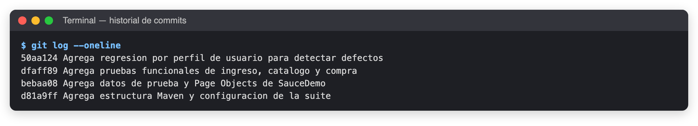
git clone <repositorio> taller-automatizacion-saucedemo && cd taller-automatizacion-saucedemo java -version # 21 mvn -v # 3.9+ # No se instala chromedriver: Selenium Manager lo descarga según la versión de Chrome.
Se recorrió manualmente el flujo completo. Luego, con un script exploratorio temporal (una «sonda» en Selenium), se listaron los
atributos data-test de cada pantalla. Así se confirmó que SauceDemo expone localizadores estables
(username, login-button, inventory-item, subtotal-label, finish…) y se
registraron los textos exactos de error y el impuesto (29,99 → 2,40, es decir 8 %). La sonda se eliminó después de usarla.
Producto), ordenamiento calculado por Java y
totales recalculados por la prueba con BigDecimal.standard_user como grupo de control.src/test/java/co/edu/pruebas/saucedemo/
├── base/ BaseTest (navegador por prueba, capturas, captura en fallo) · Config (config.properties / -D)
├── datos/ Usuario · Producto (oráculo de precios) · Cliente · Orden
├── paginas/ PaginaBase (esperas, data-test, encabezado común: carrito y cerrar sesión)
│ LoginPage · InventarioPage · CarritoPage · CheckoutInfoPage · CheckoutResumenPage · CompraCompletaPage
└── pruebas/ LoginTest · CatalogoTest · CompraTest · RegresionPorUsuarioTest (@Tag("defectos"))
Prueba ──usa──▶ Page Object ──WebDriver──▶ Chrome ──HTTPS──▶ www.saucedemo.com
│ └─ cada acción devuelve la siguiente página (navegación fluida y tipada)
└─ datos/ aporta entradas y resultados esperados
Se implementaron las páginas y luego las pruebas por funcionalidad. Se ejecutó la suite funcional (mvn test) hasta
quedar en verde y estable, y después la regresión por perfil (mvn test -Pdefectos). Cada falla se analizó con la
captura automática para decidir si era un defecto de la aplicación o un error del script.
| Comando | Resultado |
|---|---|
mvn test | Suite funcional, 18 ejecuciones con standard_user. Debe quedar en verde. |
mvn test -Pdefectos | Regresión por perfil, 25 ejecuciones. Se espera que falle con los usuarios defectuosos. |
mvn test -Dheadless=false | Igual, pero mostrando el navegador (útil para demostraciones). |
mvn test -Dtest=CompraTest | Una sola clase de pruebas. |
| Id | Caso | Datos / acciones | Resultado esperado | Estado |
|---|---|---|---|---|
| CP-LOG-01 | Ingreso válido | standard_user / secret_sauce | Llega a /inventory.html, título «Products», 6 productos. | Aprobado |
| CP-LOG-02 [1–4] | Ingreso rechazado (parametrizado) | Bloqueado · clave errada · usuario vacío · clave vacía | Mensaje exacto de cada caso; permanece en la página de ingreso. | 4/4 |
| CP-LOG-03 | Acceso sin sesión | Abrir /inventory.html directamente | «You can only access '/inventory.html' when you are logged in.» | Aprobado |
| CP-LOG-04 | Cerrar sesión | Menú → Logout → botón «atrás» | Vuelve al ingreso; volver atrás no muestra el catálogo. | Aprobado |
| CP-CAT-01 | Productos y precios | Catálogo vs. oráculo Producto | 6 productos, cada uno con su precio esperado. | Aprobado |
| CP-CAT-02 [1–4] | Ordenamientos (parametrizado) | A–Z, Z–A, precio ↑, precio ↓ | La lista mostrada es igual a la lista ordenada por Java. | 4/4 |
| CP-CAT-03 | Agregar y quitar | +Backpack +Bike Light, −Backpack | Contador 2 → 1; botón «Remove» ↔ «Add to cart». | Aprobado |
| CP-CAR-01 | Carrito | 3 productos, quitar Fleece Jacket, seguir comprando | Lista exacta en orden; contador 2; conserva el contenido al volver. | Aprobado |
| CP-COM-01 | Compra completa | Backpack + Bike Light + Bolt T-Shirt | Subtotal 55,97; impuesto 4,48 (8 %); total 60,45; «Thank you for your order!»; carrito vacío. | Aprobado |
| CP-COM-02 [1–3] | Datos obligatorios (parametrizado) | Sin nombre · sin apellido · sin código postal | Mensaje «Error: … is required»; no avanza al resumen. | 3/3 |
Total: 10 casos, que suman 18 ejecuciones gracias a la parametrización: 18 aprobadas, 0 fallidas, en unos 45 s.
@Tag("defectos"))| Id | Control | Criterio de aceptación |
|---|---|---|
| DEF-01 | Imágenes del catálogo | Las 6 imágenes son distintas. |
| DEF-02 | Precios del catálogo | Cada precio coincide con el oráculo. |
| DEF-03 | Ordenar por precio ↑ | La lista queda ordenada y no aparecen alertas. |
| DEF-04 | Compra de un producto | Llega a «Thank you for your order!». |
| DEF-05 | Tiempo de ingreso | Menos de 3 segundos desde el clic en «Login» hasta ver el catálogo. |
Cada acción que cambia de pantalla devuelve el Page Object de la siguiente. Así el compilador guía el flujo y la prueba se lee como el caso de uso.
public class LoginPage extends PaginaBase { private static final By USUARIO = dataTest("username"); // [data-test="username"] private static final By CLAVE = dataTest("password"); private static final By BOTON = dataTest("login-button"); private static final By ERROR = dataTest("error"); /** Camino feliz: ingresa y devuelve el catalogo (espera a que cargue). */ public InventarioPage ingresarComo(Usuario usuario) { intentarIngreso(usuario.nombre(), Usuario.CLAVE); return new InventarioPage(driver).esperarCarga(); } /** Ingreso que puede fallar: permanece en esta pagina. */ public LoginPage intentarIngreso(String usuario, String clave) { ... } public String mensajeError() { return visible(ERROR).getText(); } }
@Test @DisplayName("CP-COM-01 Compra completa: totales correctos (impuesto 8 %) y confirmacion") void compraCompleta() { List<Producto> compra = List.of(Producto.MORRAL, Producto.LUZ_BICICLETA, Producto.CAMISETA_BOLT); InventarioPage catalogo = ingresar(); compra.forEach(catalogo::agregar); CheckoutResumenPage resumen = catalogo.irAlCarrito().pagar().llenar(Cliente.valido()).continuar(); capturar("resumen"); // Oraculo independiente: se calcula con los precios del catalogo esperado, no con los de la pantalla BigDecimal subtotal = compra.stream().map(Producto::precio).reduce(BigDecimal.ZERO, BigDecimal::add); BigDecimal impuesto = subtotal.multiply(TASA_IMPUESTO).setScale(2, RoundingMode.HALF_UP); assertAll( () -> assertEquals(compra.stream().map(Producto::nombre).toList(), resumen.productos()), () -> assertEquals(subtotal, resumen.subtotal(), "Subtotal"), () -> assertEquals(impuesto, resumen.impuesto(), "Impuesto"), () -> assertEquals(subtotal.add(impuesto), resumen.total(), "Total")); CompraCompletaPage confirmacion = resumen.finalizar(); assertEquals("Thank you for your order!", confirmacion.encabezado()); assertEquals(0, confirmacion.cantidadEnCarrito(), "El carrito debe quedar vacio"); }
@ParameterizedTest(name = "[{index}] {3}") @CsvSource(delimiter = '|', nullValues = "NULO", textBlock = """ locked_out_user | secret_sauce | Epic sadface: Sorry, this user has been locked out. | Usuario bloqueado standard_user | clave_erronea | Epic sadface: Username and password do not match any user in this service | Clave incorrecta NULO | secret_sauce | Epic sadface: Username is required | Usuario vacio standard_user | NULO | Epic sadface: Password is required | Clave vacia """) void ingresoRechazado(String usuario, String clave, String mensajeEsperado, String caso) { LoginPage login = new LoginPage(driver).abrir().intentarIngreso(usuario, clave); assertAll(() -> assertEquals(mensajeEsperado, login.mensajeError()), () -> assertTrue(login.estaVisible(), "Debe permanecer en la pagina de ingreso")); }
AfterTestExecutionCallback se ejecuta después de la prueba y antes de @AfterEach, cuando el
navegador aún está abierto. Así toda falla deja su captura *_FALLO.png sin código adicional en las pruebas.
@RegisterExtension final AfterTestExecutionCallback capturaEnFallo = contexto -> { if (contexto.getExecutionException().isPresent() && driver != null) { try { driver.switchTo().alert().dismiss(); } // una alerta abierta impide la captura catch (NoAlertPresentException sinAlerta) { } capturar("FALLO"); } };
@ParameterizedTest(name = "[{index}] {0}") @EnumSource(value = Usuario.class, names = "BLOQUEADO", mode = EnumSource.Mode.EXCLUDE) @DisplayName("DEF-03 Ordenar por precio de menor a mayor") void ordenarPorPrecio(Usuario usuario) { List<BigDecimal> precios = ingresar(usuario).ordenarPor(Orden.PRECIO_MENOR_A_MAYOR).precios(); assertEquals(precios.stream().sorted().toList(), precios, "El catalogo no quedo ordenado por precio"); }
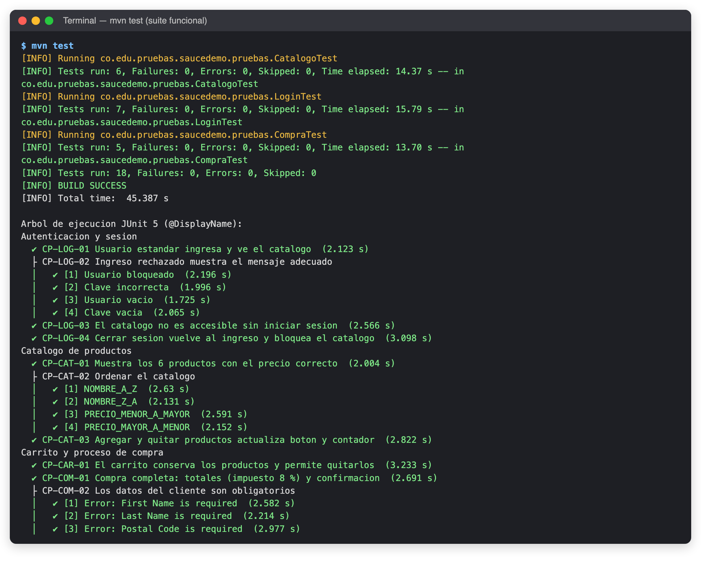
mvn test: 18 pruebas, 0 fallas. El árbol muestra el @DisplayName y el tiempo de cada caso, tomados del reporte de Surefire.Capturas tomadas automáticamente por los scripts (BaseTest.capturar) durante la ejecución:
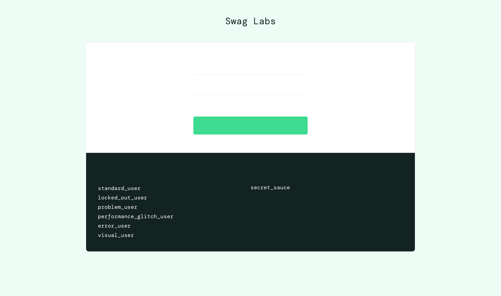
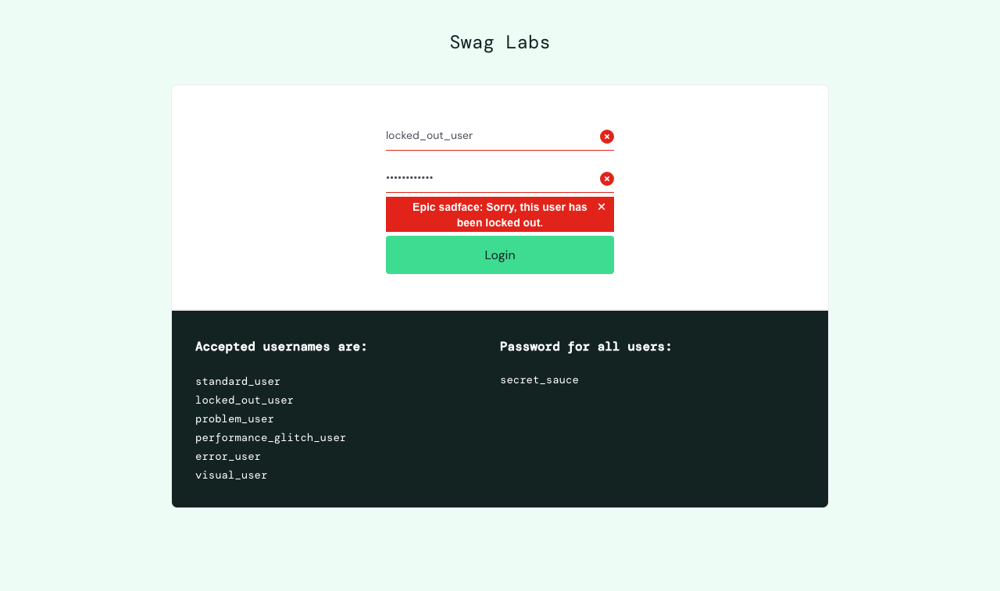
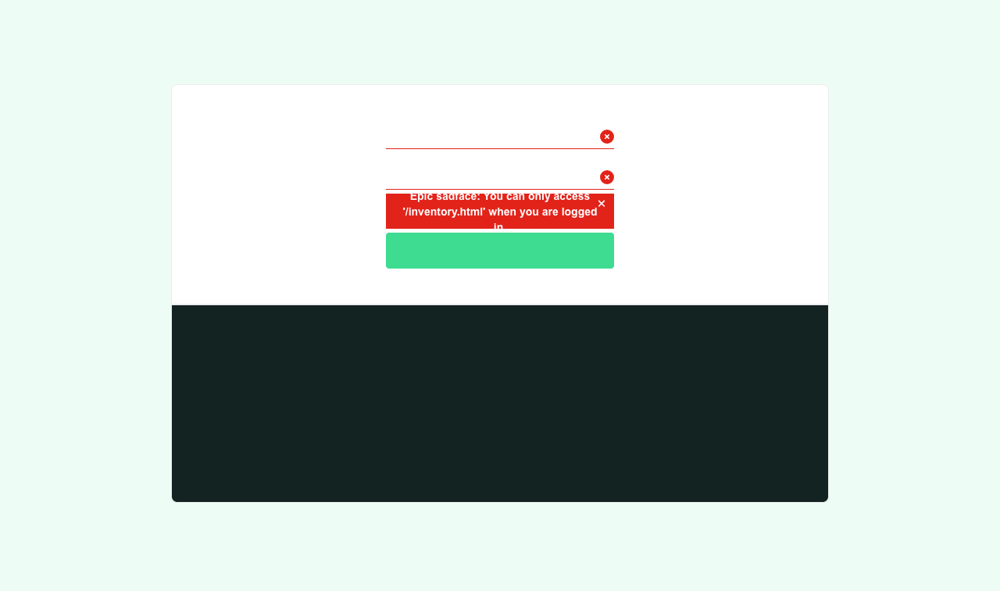
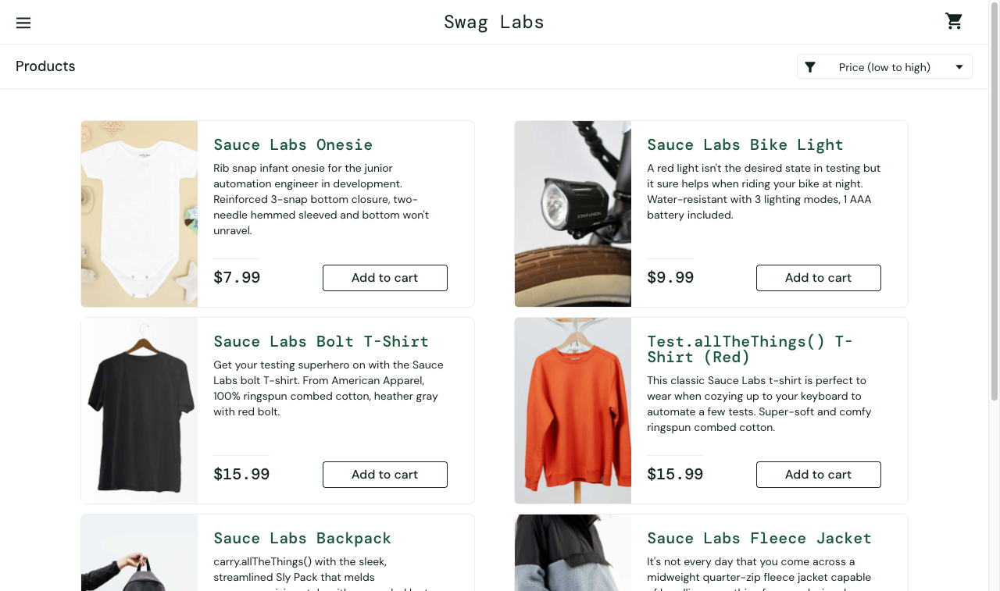
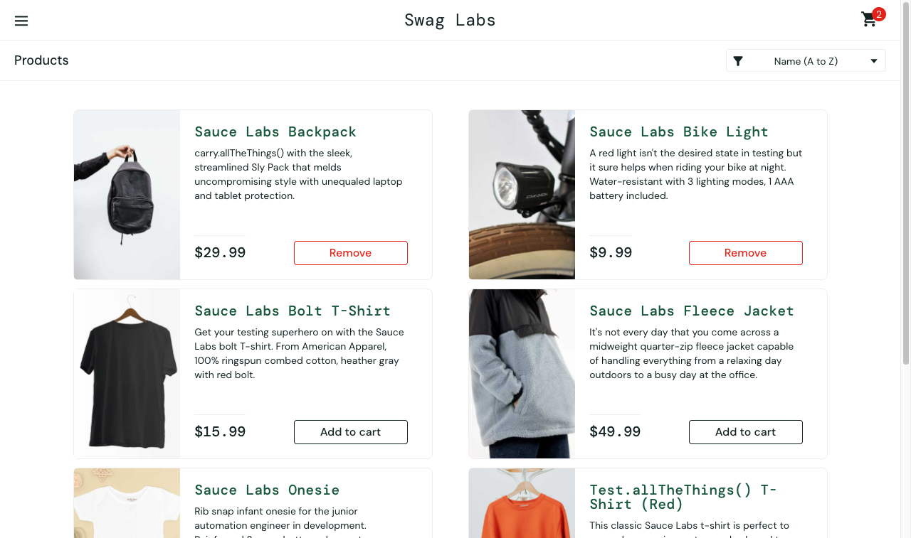
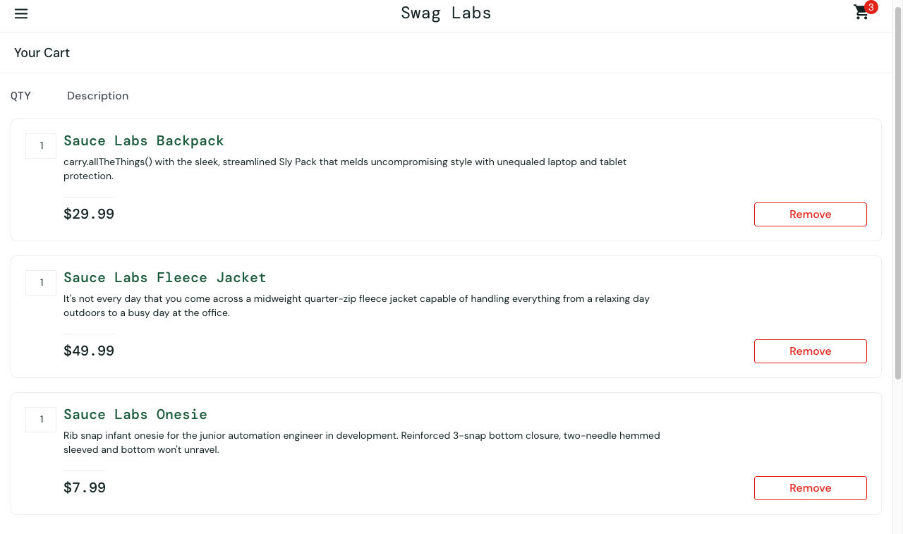
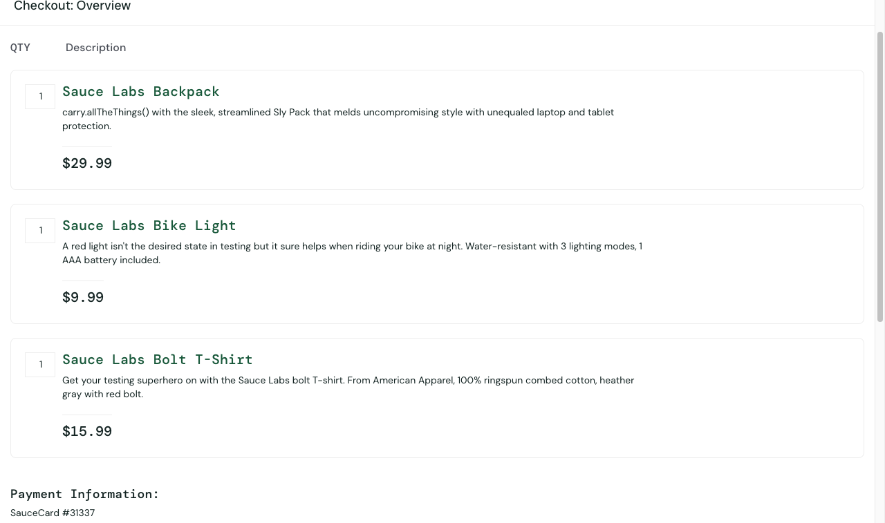
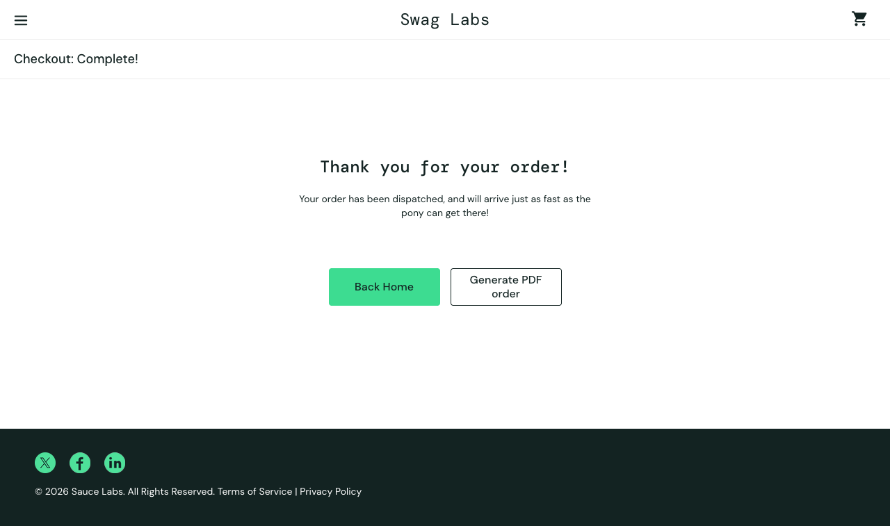
Los mismos cinco controles se ejecutaron con los cinco perfiles que pueden ingresar. standard_user es el
grupo de control: si pasa todos los controles, una falla con otro perfil indica un defecto de la aplicación y no un
error del script.
| Control | standard_user | problem_user | performance_glitch_user | error_user | visual_user |
|---|---|---|---|---|---|
| DEF-01 Imágenes distintas | ✔ | ✘ BUG-01 | ✔ | ✔ | ✔ |
| DEF-02 Precios correctos | ✔ | ✔ | ✔ | ✔ | ✘ BUG-06 |
| DEF-03 Ordenar por precio | ✔ | ✘ BUG-02 | ✔ | ✘ BUG-04 | ✘ BUG-06 |
| DEF-04 Compra completa | ✔ | ✘ BUG-03 | ✔ | ✘ BUG-05 | ✔ |
| DEF-05 Ingreso < 3 s | ✔ 1,9 s | ✔ | ✘ BUG-07 | ✔ | ✔ |
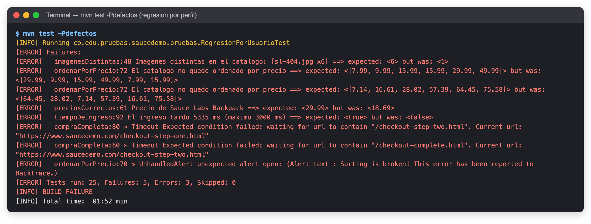
mvn test -Pdefectos: 25 ejecuciones, 5 fallas de aserción y 3 errores (tiempos de espera agotados y una alerta inesperada). Cada mensaje identifica la causa.| Id | Perfil | Descripción y evidencia | Severidad |
|---|---|---|---|
| BUG-01 | problem_user | Los 6 productos muestran la misma imagen (sl-404.jpg). Esperado: 6 imágenes distintas; obtenido: 1 (Fig. 13). | Media |
| BUG-02 | problem_user | «Price (low to high)» no reordena: queda [29.99, 9.99, 15.99, 49.99, 7.99, 15.99]. | Media |
| BUG-03 | problem_user | Lo que se escribe en «Last Name» se escribe en «First Name»: el apellido queda vacío y la compra no puede continuar (Fig. 14). | Crítica |
| BUG-04 | error_user | Al ordenar aparece la alerta «Sorting is broken! This error has been reported to Backtrace.» y el orden no cambia. | Media |
| BUG-05 | error_user | El botón «Finish» del resumen no responde: la compra nunca se confirma (Fig. 15). | Crítica |
| BUG-06 | visual_user | Los precios no corresponden a los reales y cambian entre cargas (Backpack $18,69 frente a $29,99). El orden por precio queda incoherente y el ícono del carrito aparece desplazado (Fig. 16). | Alta |
| BUG-07 | performance_glitch_user | El ingreso tarda 5 335 ms, por encima del umbral de 3 000 ms (standard_user: unos 1 900 ms). | Media |
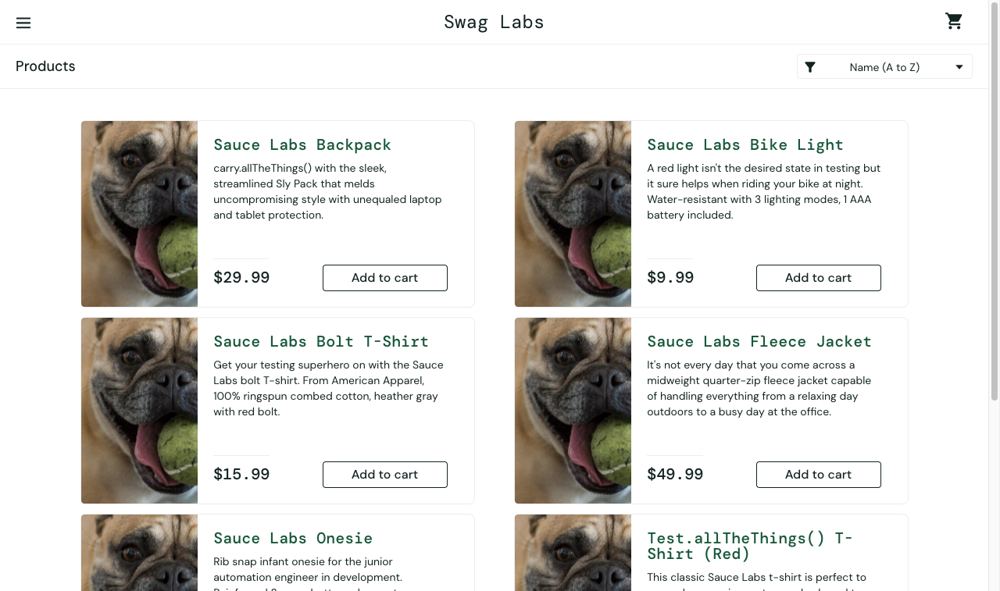
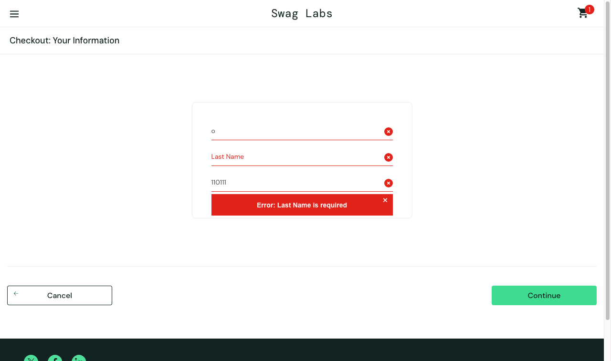
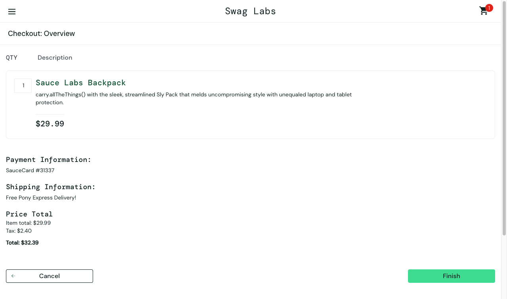
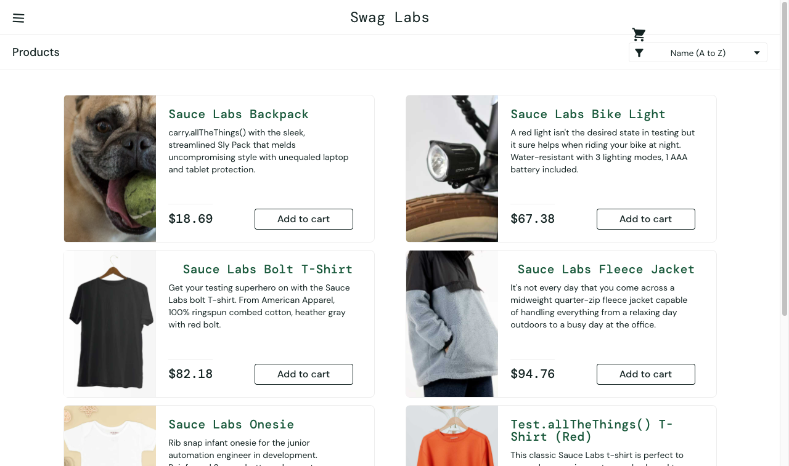
Sobre la herramienta. Selenium con JUnit 5 resultó adecuado para pruebas funcionales de caja negra: no hizo falta conocer el código de SauceDemo, solo su comportamiento observable. Lo que más pesó en la calidad de los scripts no fue la herramienta en sí, sino las decisiones de diseño. Los Page Objects concentraron los localizadores en un solo lugar. Las esperas explícitas eliminaron la intermitencia: ninguna prueba falló de forma aleatoria en las ejecuciones repetidas. Y los oráculos independientes evitaron el error clásico de comparar la pantalla consigo misma.
Sobre el valor de automatizar. Recorrer a mano los 10 casos funcionales toma de 15 a 20 minutos y repetirlos con cinco perfiles de usuario lo multiplica. La suite lo hace en menos de tres minutos y deja evidencias sin esfuerzo adicional. Lo más revelador fue la regresión por perfil: los mismos cinco controles, sin cambiar una línea, encontraron 7 defectos, dos de ellos críticos porque impiden comprar. Una revisión manual rápida que use siempre el usuario «bueno» no los habría visto.
Sobre las dificultades. Varias decisiones salieron de problemas reales durante el trabajo:
standard_user) fue la herramienta para
distinguir un defecto del sitio de un error del script.Sobre la colaboración. La calidad del software es una responsabilidad compartida. Separar roles (analizar,
automatizar, revisar, reportar), acordar convenciones (ids de caso, nombres, data-test, ramas) y revisar cada cambio
con una lista de chequeo hace que la suite sea mantenible por cualquier integrante y no solo por quien la escribió. Los commits
pequeños por etapa permitieron revisar y entender el avance paso a paso. Una suite automatizada también es documentación viva:
los @DisplayName y la matriz de casos describen qué hace el sistema mejor que un documento que nadie actualiza.
Límites y siguientes pasos. Las pruebas de interfaz son más lentas y frágiles que las unitarias o de API, y dependen de un sitio externo que podría cambiar (de hecho, la versión actual ya incluye un «Dynamic Catalog»). Como mejoras se proponen ejecutar la suite en integración continua (GitHub Actions) en cada pull request, ejecutar en paralelo con un reporte compatible, agregar pruebas en Firefox y Edge, e incorporar pruebas visuales y de accesibilidad, que Selenium por sí solo no cubre (BUG-06 solo se detectó por los precios, no por el desplazamiento visual del ícono).
Referencias: Selenium Project, WebDriver documentation y Page Object Models (selenium.dev/documentation) · JUnit Team, JUnit 5 User Guide (junit.org/junit5) · Sauce Labs, Swag Labs demo (saucedemo.com) · ISTQB, Certified Tester Foundation Level Syllabus v4.0 · Apache Maven, Surefire: filtering by tags.